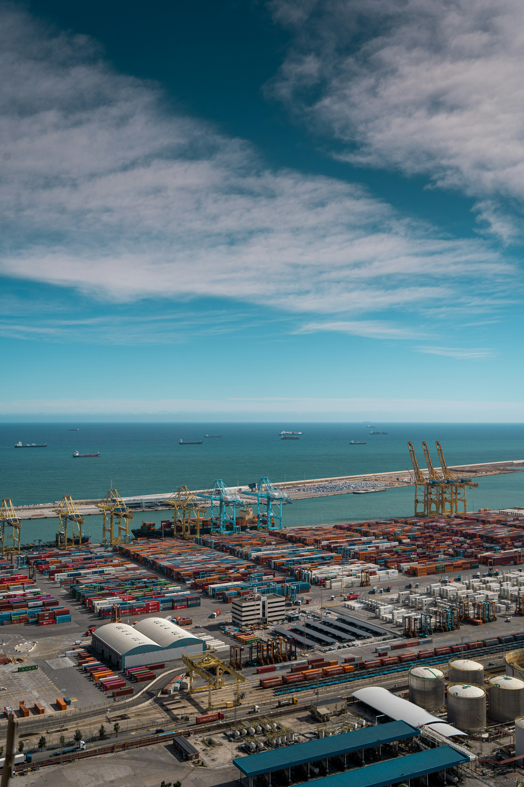
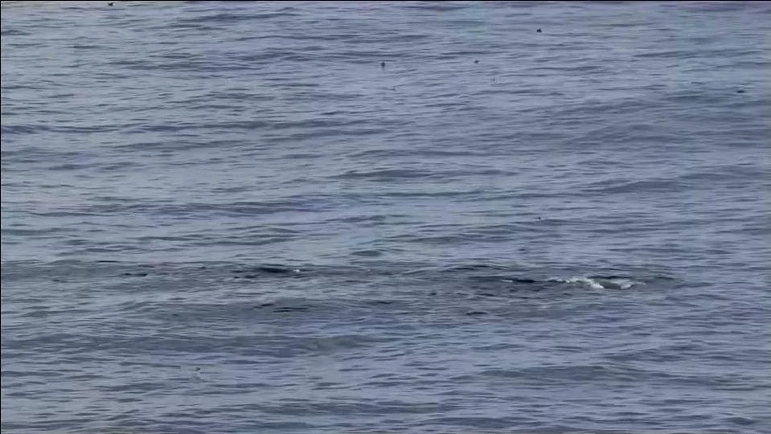

Scope the environment
Understand the site, sensing conditions, target classes, and integration requirements.
Solutions
Vessels sharing a route. A whale breaking the surface. A small signal moving across frames. Start with the observation your team needs, then define the right system.
Other environments & mission needs
 Defense & security
Defense & securityMission awareness
Developing sensing and perception capabilities for defense teams and security integrators who need to understand activity across air and maritime environments.
Explore visual monitoring of maritime approaches and site surroundings.
Give operators recorded detections and track context to inspect.
Define handoff and interoperability needs with your existing systems.
Modular sensing and network integration are development directions; a pilot establishes the relevant capabilities for each application.
 Maritime
MaritimeAbove-water awareness
Vessel-mounted optical hardware and maritime model development bring our sensing work into the environment it is designed to observe.
Explore ship, boat, sailboat, and buoy observation workflows.
Review visual activity around vessels, ports, and coastal approaches.
Use recorded imagery and field conditions to define a useful deployment.
Recorded maritime examples are available in the detection library. Model performance depends on the evaluation scene and object class.
Small signals, temporal context
Distant objects can occupy only a few pixels. Our research explores how camera-motion compensation and temporal evidence can help follow small image points.
Separate camera and background movement from possible target movement.
Investigate bright and dark image signals while preserving spatial detail.
Link observations over time and inspect their continuity.
Small-point tracks in the library are unclassified research outputs. They do not by themselves demonstrate aircraft or drone identification.

InfrastructureAwareness around essential sites
We’re developing sensing options for operators of energy, transport, port, and other essential infrastructure, with an emphasis on useful context for human decisions.
Discuss monitoring needs around substations, generating sites, and utility perimeters.
Explore observation workflows around maritime approaches and transport sites.
Start with a site-specific evaluation, operator workflow, and acceptance criteria.
Illustrative infrastructure imagery. Deployment capability is established through evaluation for the specific environment.

Research & conservationObserve, measure, discover
Our maritime origins connect field hardware, marine mammal imagery, and computer vision with questions from science and conservation.
Explore marine mammal detection in recorded imagery.
Collect visual observations and inspect changes in real-world scenes.
Define research questions, datasets, annotations, and evaluation methods together.
Scientific uses are evaluated with application-specific data. Selected model outputs illustrate behavior rather than population or species-level measurement accuracy.
Start with evidence
Define success before deployment.
We work toward a focused evaluation of your environment, target objects, and operator needs. That creates a practical basis for choosing a system.
Understand the site, sensing conditions, target classes, and integration requirements.
Review representative data and agree on how observations and performance will be assessed.
Use the findings to shape hardware configuration, workflows, and a deployment decision.
Build a clearer picture
Tell us what you need to understand. We’ll start with the right questions and an evaluation plan.